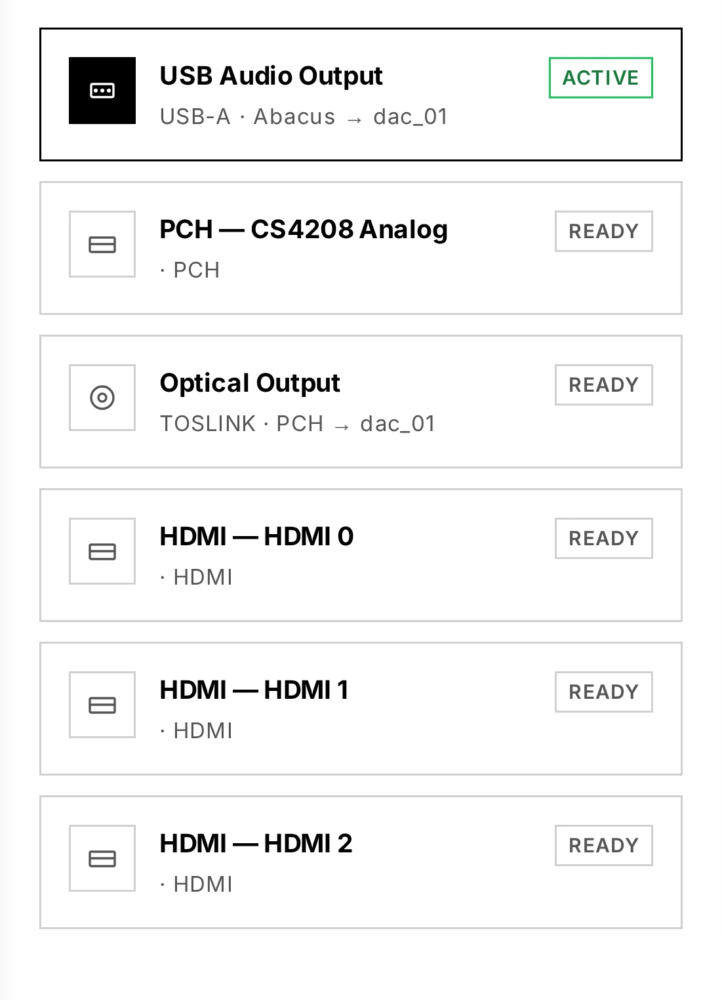
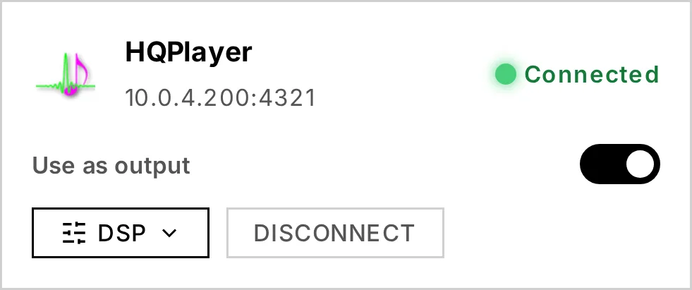

6. Outputs & engines
Audiogravity can send the same music to very different destinations — a locally attached DAC, a network renderer across the room, HQPlayer's DSP engine, or an AirPlay receiver. The output selector switches between them in one tap.
The output selector
In Library → Outputs, Audiogravity lists every physical output the box exposes (USB, optical, HDMI…) alongside the network renderers it has discovered, and switches the active output when you pick one. Streaming and HQPlayer connections are managed next to it in Library → Sources.

Switching is designed to be seamless. MPD's output flips gapless — over MPD's control socket, without restarting the player — so there is no silence, and a cast already playing keeps going on the new output. AirPlay is the exception: its receiver has to restart to change output, so the panel warns you first that it will interrupt any AirPlay session in progress. And when a switch does not take, the panel tells you instead of pretending it worked — it shows the reason and rolls back to the real state.
Local DAC
The default: audio goes straight from MPD to the DAC attached to the box (USB, HAT, HDMI, S/PDIF), bit-perfect and with no network round-trip. This is the purest path and the one the guided setup wires up first.
A HAT — a DAC board stacked on a Raspberry Pi's GPIO header — is the one case that needs a manual step before it can be selected: Linux does not detect it on its own. See 9. Troubleshooting → My DAC is not in the output list.
Network UPnP renderers
Audiogravity is a UPnP Control Point: it discovers every renderer on your LAN — network amplifiers, dedicated streamers, DLNA speakers (Marantz, Linn…) — and drives them directly from the interface. Browse a source, hit Play, and the stream reaches the renderer at full resolution, bit-perfect, without touching the server's own audio path.
- The output selector switches between physical DAC outputs and network renderers. A left-swipe on a renderer removes it from the known list (a renderer still on the network simply reappears at the next scan).
- A live "Up next" strip shows the track being loaded onto the renderer.
- Transport (next / prev / pause / seek / volume) is routed through the renderer that owns the queue.
- You can cast your local NAS/USB library to a network renderer too, exactly like a streaming service.
A speaker that does not answer stops the play. If the renderer you selected is asleep, off the network or still reconnecting, Audiogravity refuses the play and says so, rather than quietly sending the music out of the local DAC — the wrong room, with no explanation. Wake the speaker up, or pick another output.
Your box's own renderer. Audiogravity advertises itself on the network (via upmpdcli) so other apps can cast to it. That self-entry appears in the renderer list as a non-selectable "This device · receives external casts" row — because playing on the box is what the Local DAC output already does.
HQPlayer
If you run HQPlayer on your network, Audiogravity integrates with it three ways:
- DSP remote — change the interpolation filter, noise shaper, output mode and volume on your HQPlayer instance from the interface. It's auto-discovered on the LAN — connect in one tap.
- NAA endpoint — the box can run HQPlayer's Network Audio Adapter so HQPlayer streams to it and out to your DAC.
- As your output — the Use as output switch on the HQPlayer card sends your library through HQPlayer's DSP engine instead of straight to the local DAC.
Use as output

With the switch on, playing an album routes it to HQPlayer, which processes it and sends it back to your DAC through the NAA. The player badges the track with where the music actually comes from — Library — and the signal path shows the full chain: Library → HQPlayer → NAA → your DAC. HQPlayer is a processor in that chain, not the source of the music.
The setting lives on the box, not in your browser: turn it on from your phone and your laptop shows it on too. Turning it off releases the sound card so local playback works again immediately.
Playback starts without making you wait. A heavy processing chain can take half a minute to produce its first note — upsampling a DSD album, for instance — so Audiogravity does not hold your tap while it checks. It watches in the background, and if no sound actually comes out it tells you under the output, a few seconds later. A track that plays normally shows nothing: silence there means it worked.
Audiogravity refuses to turn the switch on when nothing would come out — no HQPlayer configured, or its NAA not running on the box — and tells you which of the two is missing rather than sending your music into silence.
What the player shows while HQPlayer is your output. The progress bar works: it knows how long the track is, it advances, and you can drag it to move around inside the track — HQPlayer is asked to jump, exactly as your local output would be. This holds track by track through an album.
One thing does not follow. Push a whole album and the title, artist and cover stay on the first track for the whole album, while the bar and the position follow the track actually playing. HQPlayer plays straight through without announcing that it has moved on, so Audiogravity has nothing to tell it apart by. The same applies to your local library — it is not specific to any source. Nothing is wrong with the playback; only the labels are behind.
And a playback you started from HQPlayer's own remote rather than from Audiogravity shows no title at all — its remote-control connection carries the format and the position, never the identity of the track. You get "processor active" and the format, which is what is actually knowable.
What can and cannot go through HQPlayer
Two separate questions decide it, and a track has to pass both: where it comes from, and what format it is in. They are independent — a Qobuz album in FLAC is refused for the first reason even though FLAC is a format HQPlayer plays perfectly.
Which sources reach HQPlayer today:
| Source | Through HQPlayer |
|---|---|
| Your local library | Yes |
| Internet radio | Yes |
| A UPnP media server (MinimServer, Plex…) | Yes |
| Qobuz, Tidal, HIGHRESAUDIO | No — not yet |
| Roon | Not applicable — a Roon zone is its own output chain |
The three streaming services are the exception, and it is not about audio quality: those two, radio and your library all reach HQPlayer as a plain web address it fetches by itself, whereas a streaming service is delivered through Audiogravity's own relay — and that path has not been connected to HQPlayer. It is planned, not ruled out: Qobuz and HIGHRESAUDIO are official HQPlayer partners. Until then, turn Use as output off to play them on the local output, and Audiogravity says so plainly instead of going quiet.
Which formats HQPlayer decodes:
HQPlayer plays FLAC, WAV, AIFF, WavPack, MP3, DSF and uncompressed DFF. It does not decode anything else — AAC, ALAC, M4A/MP4, OGG/Opus, APE, WMA, DST, AC3/E-AC3, DTS, Musepack, TAK, TTA, Shorten, Speex, AMR, MKA/WebM — nor AIFC, the compressed flavour of AIFF. DFF is read uncompressed only: its compressed form, DST, is refused.
Whenever a track is in one of those formats — an ALAC album in your library, an AAC track on your media server, a station broadcasting in AAC — Audiogravity tells you straight away rather than letting playback fail obscurely, and names the format.
The same file can be named two ways. M4A and MP4 are one container under two names, and media servers disagree: MinimServer publishes a track as
.m4a, Plex publishes the very same file as.mp4. Both are refused, and the message names whichever spelling your server used — it is one format, not two problems. Turn the switch off to play it on the local output. An album is checked before anything is sent, so a single unplayable track is caught up front instead of stopping the music halfway through.
This matters most for internet radio, where many Hi-Res stations broadcast in AAC — a station can therefore be refused on format even though radio is a source HQPlayer otherwise accepts.
One output at a time. HQPlayer and a network renderer cannot both be your output. If both are selected, Audiogravity asks you to turn one off instead of guessing which device you meant.
Roon
Audiogravity works with a Roon Bridge endpoint and connects to your remote Roon Core for metadata and transport — so a Roon zone can sit alongside your other outputs in the same interface.
Setting it up. Roon has no in-app settings screen and no installer flag — you point Audiogravity at your Roon Core in the core's config file, then authorize it once inside Roon:
- Point AG at the Core. On the box, edit
/opt/audiogravity/core/.envand set:
(The Core's control portROON_ENABLED=true ROON_CORE_HOST=192.168.1.50 # the IP of the machine running Roon Core9330is used automatically; leaveROON_CORE_HOSTat the default only if the Core runs on the same box.) - Restart the core so it re-reads the file:
sudo systemctl restart ag-core-server - Authorize the extension in Roon. Open Roon (the desktop or mobile app connected to your Core) → Settings → Extensions. An extension named “Audiogravity” appears in the list — click Enable next to it. That's the one-time authorization: Roon grants AG a token, AG stores it, and it reconnects on its own afterwards (no need to re-authorize on restarts).
If
ROON_CORE_HOSTis wrong or the Core is unreachable, the core logs a connection warning and keeps retrying — correct the IP in.envand restart. Until you click Enable in Roon (step 3), the connection stays unauthorized and Roon data won't appear.
AirPlay
The box can act as an AirPlay receiver (shairport-sync) — stream to it from an iPhone, iPad or Mac, and it plays through the same output chain, with the same now-playing readout.
Seeing the whole chain
The Audio Pipeline view (Pro) draws your entire signal chain as a live graph — controller → server → streamer → converter/amp → output. Animated particles mean audio is flowing; green links mean lossless, no sample-rate conversion (bit-perfect); a bit-perfect badge confirms it. On small screens it falls back to a simplified Now Playing view with per-stream output steering (USB / Optical).
The graph is drawn from a map you own, audio-topology.json — see
7. Administration → Audio topology
to edit it, and the same section for the tuning that keeps this path clean.